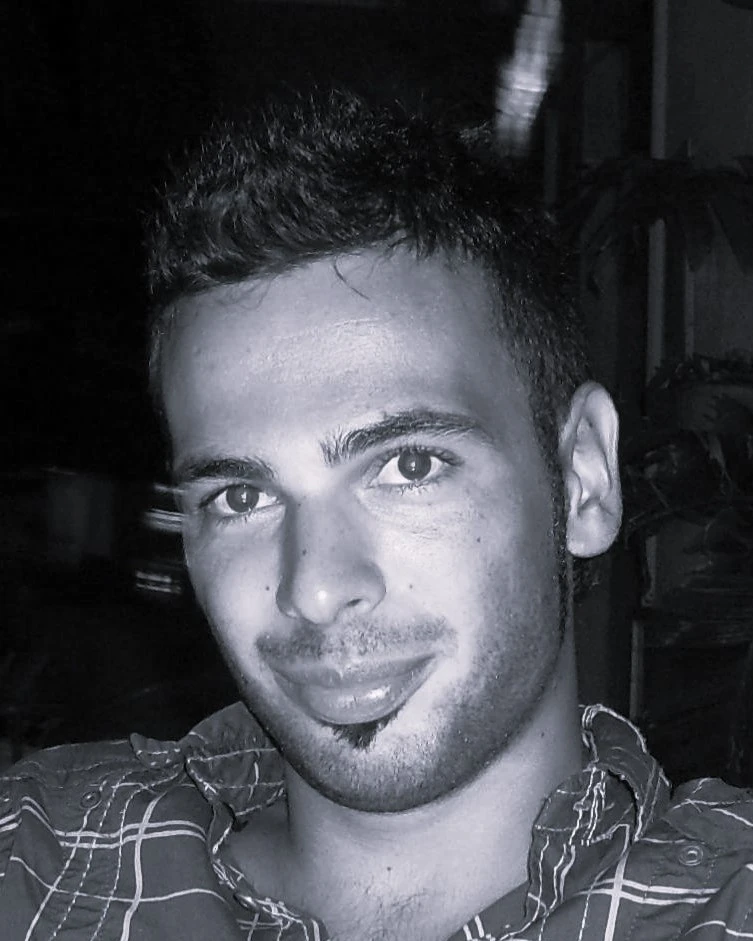

NOTHING IS
DISCONNECTED.
Sport management, kinesiology, running coaching, education and web design. Five distinct fields, connected by an approach: understand the context, clarify the goal and choose the right tools.
Five distinct fields. One principle for addressing different needs.
I work across five fields: sport management, kinesiology, running coaching, education and web design. Each has its own goals, tools and responsibilities. I do not apply the same formula to every request: I listen, check that I have the relevant expertise and define the scope of the work clearly.
My university education in Sport and Exercise Sciences and Sport Management is a documented part of my background. The different services are not interchangeable: each request is considered within its own field, with clear boundaries around expertise and responsibility.
NOTHING IS DISCONNECTED. Connections matter when they are relevant, clear and verifiable.
Discover who I am
PURPOSE.
It does not start with a list of everything I can do.
It is about where you want to go.
From there, everything changes:
what I look at,
what I choose,
what I connect.
Because there is no one-size-fits-all path.
There is the one that works for you.
HERE.
Partinico is my starting point, between Palermo and Trapani.
From here, I work with people, ideas and projects across five fields, with the same attention. In-person meetings are agreed according to the service, location and availability; some work can be done online.
Nearby towns around Partinico
I receive people in Partinico who travel from the provinces of Palermo and Trapani, especially from nearby towns that are easy to reach: Borgetto, Giardinello, Montelepre, Trappeto, Balestrate, Terrasini, Cinisi, Torretta, San Giuseppe Jato, San Cipirello, Piana degli Albanesi, Altofonte, Camporeale, Carini, Monreale, Alcamo and Castellammare del Golfo.
This is a reference area, not a list of additional offices or guaranteed in-person availability. Meeting location and format are agreed before an appointment.
A place is a starting point, not a boundary.
Discover where I workLET’S TALK.
Tell me what you want to achieve and the context you are starting from.
I will help establish whether your request fits one of my fields and what a sensible next step could be.
Message me on WhatsApp